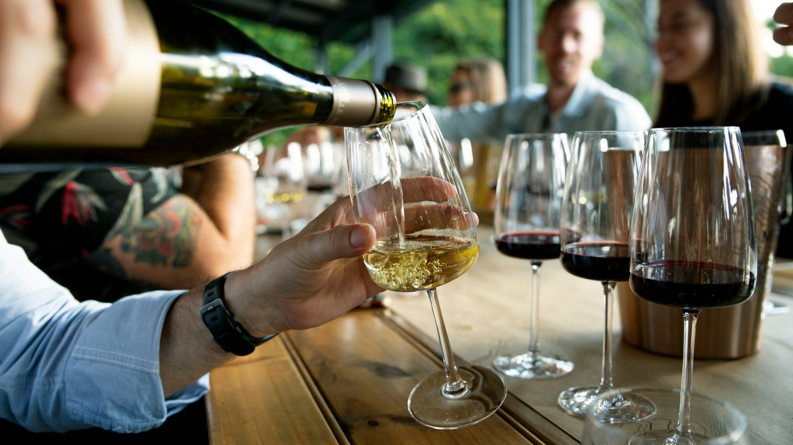
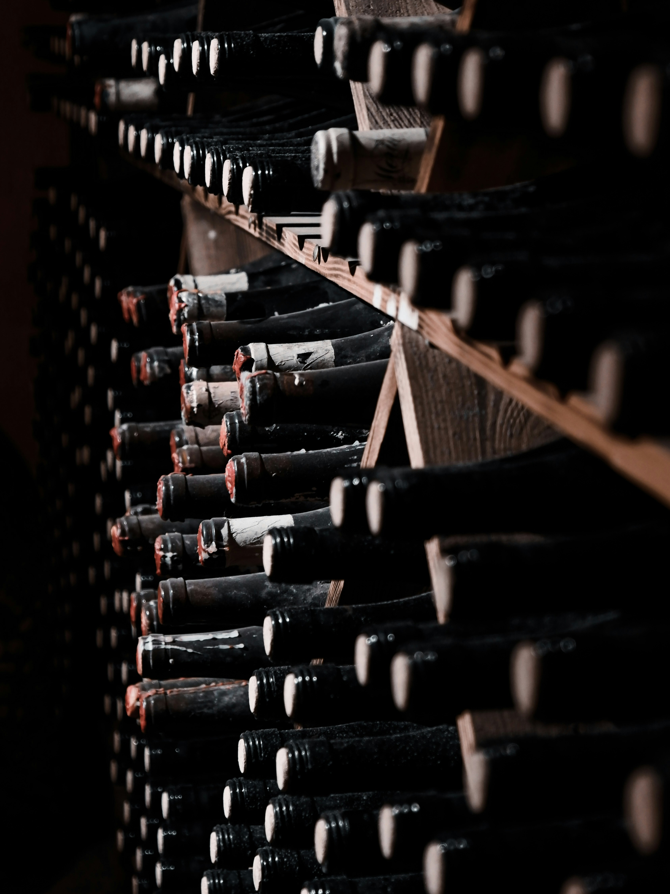

Nossa história
Há mais de 15 anos no mercado, a Vinheria Agnello é uma loja física de empresa tradicional de São Paulo com uma seleção gigante e variada de vinhos produzidos nacionalmente e internacionalmente. E atualmente está se expandindo para o mercado on-line, mantida com carinho de um negócio familiar do Sr. Giulio, sua filha Bianca e uma equipe dedicada de seis profissionais altamente capacitados que tratam do estoque, da administração e das vendas como se fossem da família.
Porque só agora expandir para o mercado on-line?
Com o passar do tempo, percebemos que o atendimento físico que sempre demos ao balcão podia chegar mais longe. Porque atender apenas em um lugar fixo se podemos atender distante? Onde milhares de pessoas podem ter o acesso sobre como os nossos saborosos vinhos funcionam, trazendo toda a nossa tradição para a sua casa. Foi então que decidimos levar o nosso atendimento além, não apenas físico, mas também on-line.
Variedades de Vinhos Sofisticados

Na nossa loja online, você não vai encontrar apenas uma lista de garrafas de vinho, mas sim uma seleção de vinhos nacionais e internacionais cuidadosamente e criteriosamente selecionada especialmente para você.
Nosso cuidado com os vinhos até sua casa

Independente do seu conhecimento em vinhos, seja iniciante ao mais experiente, queremos ajudar você a escolher a garrafa perfeita para acompanhar os seus melhores momentos e celebrações. Você irá entender o universo dos vinhos conhecendo a melhor uva, região, vinícola e melhores harmonizações. Tudo é embalado e expedido com o mesmo cuidado com que atendemos quem entra pela nossa porta em São Paulo — para que abra não apenas uma garrafa qualquer de vinho, mas sim, que abra uma experiência que levará para o resto de sua vida.